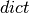

Semi-analytical models for cones and cylinder (compmech.conecyl)¶
The ConeCyl class embodies all the methods and functions necessary to perform:
- linear static analysis
- linear buckling analysis
- non-linear static analysis
in conical and cylindrical structures.
The implementation focused on laminate composite shells with a constant
laminate constitutive relation. This means that the semi-analtical
models were derived doing an integration using a constant ![[F]](../../_images/math/701ee538464334ab7f699b9029ec7b4da7d3fafd.png) for the whole
domain. Recalling that correlates the strains and the distributed
stresses by the relation:
for the whole
domain. Recalling that correlates the strains and the distributed
stresses by the relation:
![\{N\} = [F] \{\varepsilon\}](../../_images/math/9ac01021a78866179d9f0ca3e9a1fb7143c8a6a3.png)
The ConeCyl object¶
- class compmech.conecyl.ConeCyl¶
Methods
SPLA(PLs[, NLgeom]) Runs the Single Perturbation Load Approach (SPLA). add_SPL(PL[, pt, theta]) Add a Single Perturbation Load (SPL). calc_full_c(cu[, inc]) Returns the full set of Ritz constants. exclude_dofs_matrix(k[, return_kkk, ...]) Makes the partition of the dofs for prescribed displacements. lb([c, tol, combined_load_case]) Linear Buckling analysis. plot(c[, invert_x, plot_type, vec, ...]) Contour plot for a Ritz constants vector. save() Save the ConeCyl object using cPickle. static([NLgeom]) Static analysis for cones and cylinders. strain(c[, x, t, gridx, gridt, inc]) Calculates the strain field for a given Ritz constants vector. uvw(c[, x, t, gridx, gridt]) Displacement field for a given set of Ritz constants. - SPLA(PLs, NLgeom=True)¶
Runs the Single Perturbation Load Approach (SPLA).
A set of non-linear results will be
Parameters: PLs: list :
The perturbation loads used to build the knock-down curve. It must be a list of float values.
NLgeom : bool, optional
Flag passed to the static() method that tells whether a geometrically non-linear analysis is to be performed. The Default is True.
Returns: curves : list
The sequence of curves, one curve for each perturbation load given in the input parameter PLs. Each curve in the list is a dict object with the keys:
key description 'wall_time_s' The wall time for the non-linear analysis 'name' The name of the curve. Ex: 'PL = 1. N' 'cs' A list with a vector of Ritz constants for each load increment needed 'increments' A list with the values of increments needed 'wPLs' A list with the normal displacement at the perturbation load application point for each load increment 'uTMs' A list containing the axial displacement for each load increment 'Fcs' A list containing the axial reaction force for each load increment Notes
The curves are stores in the ConeCyl parameter outputs['SPLA_curves'].
- add_SPL(PL, pt=0.5, theta=0.0)¶
Add a Single Perturbation Load (SPL).
Adds a perturbation load to the ConeCyl object.
Parameters: PL : float
The perturbation load value.
pt : float
The normalized position along the
 axis in which the new SPL
will be included.
Default is 0.5.
axis in which the new SPL
will be included.
Default is 0.5.theta : float
The angular position in radians of the new SPL. Default is 0..
Notes
The ConeCyl object has three parameters which must be changed when a SPL is included: PLvalues, PLxs and PLthetas. These three parameters are list objects that can be changed elsewhere by the analyst.
- calc_full_c(cu, inc=1.0)¶
Returns the full set of Ritz constants.
When prescribed displacements take place the matrices and the Ritz constants are partitioned like:
k = | kkk kku | | kuk kuu |and the corresponding Ritz constants:
c = | ck | | cu |This function adds the set of known Ritz constants (ck) to the set of unknown (cu) based on the prescribed displacements.
Parameters: cu : numpy.ndarray
The set of unknown Ritz constants
inc : float
The increment for which
 should be calculated.
Default is
should be calculated.
Default is  .
.Returns: c : numpy.ndarray
The full set of Ritz constants.
- exclude_dofs_matrix(k, return_kkk=False, return_kku=False, return_kuk=False)¶
Makes the partition of the dofs for prescribed displacements.
Makes the following partition of a given matrix:
k = | kkk kku | | kuk kuu |Parameters: k : scipy.sparse.coo_matrix
Matrix to be partitioned.
return_kkk : bool, optional
If the region
 must be returned.
must be returned.return_kku : bool, optional
If the region
 must be returned.
must be returned.return_kuk : bool, optional
If the region
 must be returned.
must be returned.Returns: out : dict
A  object containing the keys for the corresponding sub-matrices kkk, kku, kuk, kuu. The sub-matrix out['kuu'] is a scipy.sparse.csr_matrix, while the others are 2-D numpy.ndarray objects.
- lb(c=None, tol=0, combined_load_case=None)¶
Linear Buckling analysis.
The following parameters of the ConeCyl object will affect the linear buckling analysis:
parameter description num_eigenvalues Number of eigenvalues to be extracted num_eigvalues_print Number of eigenvalues to print after the analysis is completed Parameters: combined_load_case : int, optional
It tells whether the linear buckling analysis must be computed considering combined load cases, each value will tell the algorithm to rearrange the linear matrices in a different way. The valid values are 1, or 2, where:
1 : find the critical axial load for a fixed torsion load
2 : find the critical axial load for a fixed pressure load
3 : find the critical torsion load for a fixed axial load
Notes
The extracted eigenvalues are stored in the eigvals parameter of the ConeCyl object and the
 eigenvector in the
eigvecs[i-1, :] parameter.
eigenvector in the
eigvecs[i-1, :] parameter.
- plot(c, invert_x=False, plot_type=1, vec='w', filename='', figsize=(3.5, 2.0), save=True, add_title=True, title='', colorbar=False, aspect='equal', clean=True, dpi=300, texts=[])¶
Contour plot for a Ritz constants vector.
Parameters: c : numpy.ndarray
The Ritz constants that will be used to compute the field contour.
vec : str, optional
Can be 'u', 'v', 'w', 'phix' or 'phit', which indicates which element of the displacement vector should be plotted. The default value is 'w' (the normal displacement).
invert_x : bool, optional
Inverts the
axis of the plot. It may be used to match
the coordinate system of the finite element models created
using the desicos.abaqus module.plot_type : int, optional
For cylinders only 4 and 5 are valid. For cones all the types can be used:
- 1 concave up (with invert_x=False) (default)
- 2 concave down (with invert_x=False)
- 3 stretched closed
- 4 stretched opened (
 vs.
vs.  )
) - 5 stretched opened (
 vs. )
vs. )
save : bool, optional
Flag telling whether the contour should be saved to an image file. The default value is True.
dpi : int, optional
Resolution of the saved file in dots per inch. The default is 300.
filename : str, optional
The file name for the generated image file. If no value is given, the
 parameter of the ConeCyl object will be used.
parameter of the ConeCyl object will be used.figsize : tuple, optional
The figure size given by (width, height). The default is (3.5, 2.).
add_title : bool, optional
If a title should be added to the figure. Default is True.
title : str, optional
Default is an empty string "". If any string is given add_title will be ignored and the given title added to the contour plot.
colorbar : bool, optional
If a colorbar should be added to the contour plot. Default is False.
aspect : str, optional
String that will be passed to the AxesSubplot.set_aspect() method. The default value is 'equal'.
clean : bool, optional
Clean axes ticks, grids, spines etc. Default is True.
Returns: ax : matplotlib.axes.AxesSubplot
The Matplotlib object that can be used to modify the current plot if needed.
- save()¶
Save the ConeCyl object using cPickle.
Notes
The pickled file will have the name stored in ConeCyl.name followed by a .ConeCyl extension.
- static(NLgeom=False)¶
Static analysis for cones and cylinders.
The analysis can be linear or non-linear. In case of a non-linear analysis the following parameters of the ConeCyl object will affect the non-linear analysis:
non-linear algorithm description NL_method 'NR' for the Newton-Raphson 'arc_length' for the Arc-Length method modified_NR activate the modified Newton-Raphson compute_every_n if modified_NR=True, the non-linear matrices will be updated at every  iterations
iterationsincrementation description initialInc initial load increment size minInc minimum increment size; if achieved the analysis is terminated maxInc maximum increment size convergence criteria description absTOL the convergence is achieved when the maximum residual force is smaller than this value maxNumIter maximum number of iteration; if achieved the load increment is bisected numerical integration description ni_num_cores number of cores used for the numerical integration ni_method 'trapz2d' for 2-D Trapezoidal’s 'simps2d' for 2-D Simpsons’ integration Parameters: NLgeom : bool
Flag to indicate whether a linear or a non-linear analysis is to be performed. The default is True.
Returns: cs : list
A list containing the Ritz constants for each load increment of the static analysis. The list will have only one entry in case of a linear analysis.
Notes
The returned cs is stored in the cs parameter of the ConeCyl object. The actual increments used in the non-linear analysis are stored in the increments parameter.
- strain(c, x=None, t=None, gridx=100, gridt=200, inc=1.0)¶
Calculates the strain field for a given Ritz constants vector.
Parameters: c : numpy.ndarray
The Ritz constants vector to be used for the strain field calculation.
x : numpy.ndarray, optional
The
coordinates where to calculate the strains.t : numpy.ndarray, optional
The
coordinates where to calculate the strains, must
have the same shape as x.gridx : int, optional
When x and t are not supplied, gridx and gridt are used.
gridt : int, optional
When x and t are not supplied, gridx and gridt are used.
inc : float, optional
Load increment, necessary to calculate the full set of Ritz constants using calc_full_c().
- uvw(c, x=None, t=None, gridx=100, gridt=200)¶
Displacement field for a given set of Ritz constants.
For a given full set of Ritz constants c, the displacement field is calculated and stored in the parameters u, v, w, phix, phit of the ConeCyl object.
Parameters: c : float
The full set of Ritz constants
x : numpy.ndarray
The
positions where to calculate the displacement field.
Default is None and the method _default_field is used.t : numpy.ndarray
The theta positions where to calculate the displacement field. Default is None and the method _default_field is used.
gridx : int
Number of points along the
axis where to calculate the
displacement field. Default is 100.gridx : int
Number of points along the
 where to calculate the
displacement field. Default is 200.
where to calculate the
displacement field. Default is 200.Returns: out : tuple
A tuple of numpy.ndarrays containing (u, v, w, phix, phit).
Notes
The returned values u`, v, w, phix, phit are stored as parameters with the same name in the ConeCyl object.
Non-linear analysis¶
Non-linear algorithms used with the ConeCyl object.
Models’ Database¶
Used to configure the main parameters for each implemented model.
- compmech.conecyl.modelDB.get_linear_matrices(cc, combined_load_case=None)[source]¶
Obtain the right functions to calculate hte linear matrices for a given model.
The model parameter of the ConeCyl object is used to search for the functions fG0, fG0_cyl, fkG0, fkG0_cyl, and the matrix k0edges is calculated, when applicable.
Parameters: cc : compmech.conecyl.ConeCyl
The ConeCyl object.
combined_load_case : int, optional
As explained in the ConeCyl.lb() method, the integer indicating which combined load case should be used. Default is None.
Returns: out : tuple
A tuple containing (fk0, fk0_cyl, fkG0, fkG0_cyl, k0edges).